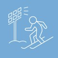
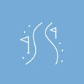
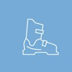
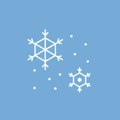

Skifahren am Semmering bis 21 Uhr — 1 Stunde von WienSkiing until 9 pm — 1 hour from Vienna
Fahr auf einer Weltcup-PisteSki on a World Cup slope
Alle zwei Jahre Austragungsort des Audi FIS Ski Weltcups der Damen. Du fährst auf derselben Panorama-Piste — bei Flutlicht (13 von 14 km beleuchtet, bis 21 Uhr).Every two years host of the Audi FIS women’s Ski World Cup. You ski the same panorama slope — under floodlights (13 of 14 km lit, until 9 pm).
14 km Pisten — kompakt & übersichtlich14 km of slopes — compact & clearly laid out
- 2 Lifte2 lifts im Winterbetriebin winter operation
- rund 14 km präparierte Pisten (blau/rot/schwarz)about 14 km of groomed slopes (blue/red/black)
- FIS-zertifizierte Panorama-Piste, 2× täglich präpariertFIS-certified panorama slope, groomed twice daily
- Beschneiung für schneesichere Tagesnowmaking for snow-sure days
Das passende Produkt wählst du im Ticketshop:Pick the right product in the ticket shop:
Auf der Piste & danebenOn the slope & beyond
14 km Pisten, 2 Lifte — Tag & Nacht, VIP-Kabine möglich.14 km of slopes, 2 lifts — day & night, VIP cabin available.
Details ansehen →See details →3 km bei Flutlicht — eine der längsten beleuchteten Bahnen Niederösterreichs.3 km under floodlights — one of Lower Austria’s longest lit runs.
Details ansehen →See details →
13 km beleuchtet, Do–Sa bis 21 Uhr — Weltcup-Flutlicht.13 km floodlit, Thu–Sat until 9 pm — World Cup lighting.
Details ansehen →See details →2 Partner-Schulen: Skischule Semmering & Schneesportschule Zauberberg · Verleih: Alpincenter & Sport Puschi.2 partner schools: Skischule Semmering & Schneesportschule Zauberberg · rental: Alpincenter & Sport Puschi.
Details ansehen →See details →Mehr im WinterMore in winter

Gespurte Loipen (u. a. Johannesloipe, 4 km) — gratis, in glasklarer Höhenluft.Groomed trails (incl. the 4 km Johannesloipe) — free, in crystal-clear air.
Details ansehen →See details →Aufstieg am Pistenrand während der Betriebszeiten — Parken gratis, kein Ticket nötig.Ascents along the slope edge during operating hours — free parking, no ticket needed.
Details ansehen →See details →
Geräumte Höhenwege & geführte Touren — z. B. zur Pollereshütte am Sonnwendstein.Cleared high paths & guided tours — e.g. to the Pollereshütte on the Sonnwendstein.
Details ansehen →See details →
Eisstockbahn auf der Terrasse des Sporthotels — kurze Einweisung, Preise an der Rezeption.Ice stock rink on the Sporthotel terrace — short briefing, prices at reception.
Details ansehen →See details →Der Berg auf der offiziellen KarteThe mountain on the official map

Anfänger & KinderBeginners & kids
Für die ersten Schwünge: Happylift — Übungslift eines externen Partners direkt in der Region.For first turns: Happylift — an external partner’s practice lift right in the region.
Happylift ↗ externer Partnerexternal partnerVIP-Kabine — LuxusbergfahrtVIP cabin — luxury ride
Hochmoderne Kabine mit Sekt & Kanapees während der Bergfahrt, danach Menü im Liechtensteinhaus — auf Anfrage.A high-tech cabin with sparkling wine & canapés on the ride up, then a menu at the Liechtensteinhaus — on request.
Details auf der Ski-SeiteDetails on the ski pageSki-Tag verlängernExtend your ski day
Sporthotel mit Wellness, Skipass-Vorteilen für Gäste (Voucher an der Rezeption), gratis Skiraum & RUFbus. Après im Grand View oder oben im Liechtensteinhaus — Regeneration in Sauna & Hallenbad.Sporthotel with wellness, ski-pass benefits for guests (voucher at reception), free ski room & RUFbus. Après at Grand View or up at the Liechtensteinhaus — ski recovery in sauna & pool.
Wenn der Berg tobt — dein Indoor-ProgrammWhen the mountain rages — your indoor plan
Nicht jeder Wintertag ist ein Pistentag. Der Berg lohnt sich trotzdem — drinnen, warm und mit Aussicht.Not every winter day is a piste day. The mountain is still worth it — indoors, warm and with a view.
SPA & WellnessSpa & wellness
Hallenbad mit Bergblick, 2 Saunen & Ruheraum — Aufwärmen nach dem Schnee.Indoor pool with mountain view, 2 saunas & relaxation room — warm up after the snow.
Grand View RestaurantGrand View restaurant
Gourmet-Küche von Yurii Novikov mit Panorama hinter Glas.Gourmet cuisine by Yurii Novikov with panorama behind glass.
LiechtensteinhausLiechtensteinhaus
Warme Stube am Gipfel — per Kabinenbahn trocken erreichbar.A cosy parlour at the summit — reached dry by cable car.
Webcams & Live-StatusWebcams & live status
Pisten, Wetter & Lifte live checken — bevor du losfährst.Check slopes, weather & lifts live — before you set off.
Winter-Pakete — Ski, Rodeln, Wellness & IgluWinter packages — ski, toboggan, wellness & igloo


Häufige FragenFrequent questions
Alle FAQs für Sommer & Winter →All FAQs for summer & winter →
 Hirschi
Hirschi